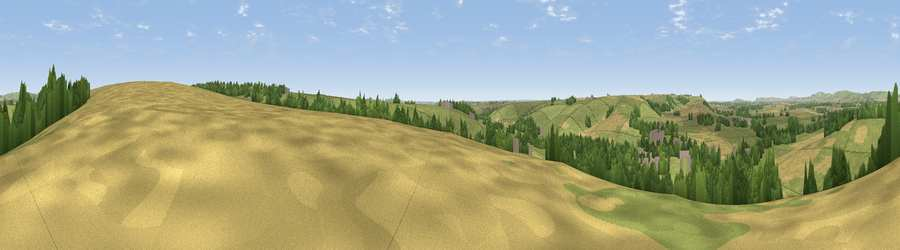

Viewpoint near Upavon
#30513 in England · top 59% of its area beats it · near UpavonWhere it is
The exact computed spot (SU 14175 55125). Click the marker for map links.
The view, rendered

A 360° render of this exact spot computed from the terrain model, tree cover and land cover — summer colours, afternoon light, calibrated against photographs of famous viewpoints. Real trees, hedges and buildings will differ in detail.
The panorama
Grey silhouette: terrain skyline in each direction (720 bearings, Earth curvature and refraction included). Dashed green: skyline with trees (+15 m) and buildings (+8 m) as obstacles. Blue strip: how far the ground is visible on each bearing.
Where the view opens
Wedge length = distance to the farthest visible ground on that bearing (vegetation-aware). Rings at 10, 25 and 50 km.
What fills the view
61% grassland · 23% cropland · 13% woodland · 3% built-up
Angular shares of the visible panorama (visual magnitude), not map area. Landscape diversity 0.43 (0–1 Shannon).
Key numbers
More beautiful places nearby
The staircase of upgrades: each row has a higher view potential than everything closer. Driving times are estimates from straight-line distance, calibrated against real road routing — check an actual route before setting out.
| Place | Direction | Drive | Score |
|---|---|---|---|
| Viewpoint near Manningford Bohune | N · 1 km | ~3 min | 43.1 |
| Viewpoint near Upavon | WSW · 2 km | ~5 min | 46.6 |
| Viewpoint near Charlton St Peter | W · 4 km | ~8 min | 50.8 |
| Viewpoint near Pewsey | NE · 4 km | ~9 min | 57.0 |
| Milton Hill | ENE · 6 km | ~13 min | 62.3 |
| Viewpoint near Milton Lilbourne | NE · 6 km | ~13 min | 62.7 |
| Easton Clump | ENE · 8 km | ~16 min | 64.0 |
| Giant's Grave | NNE · 9 km | ~17 min | 69.9 |
51.29508, -1.79809 · source: screening · position refined by local search. Computed location — check access rights before visiting.